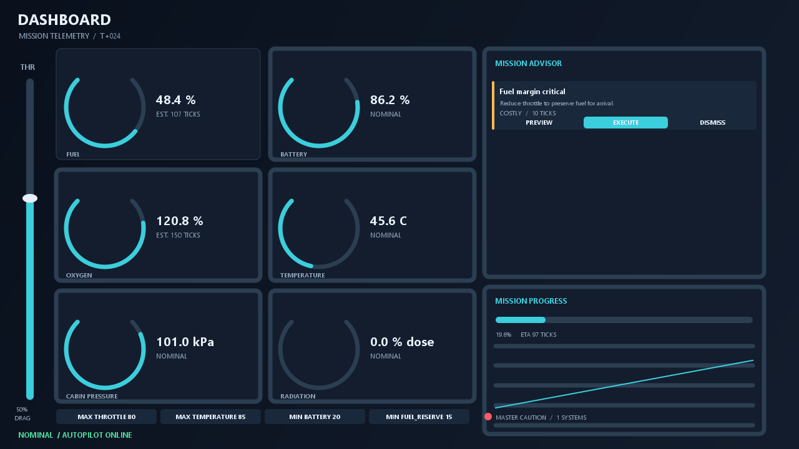
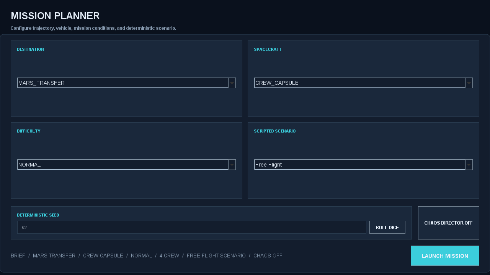

A plain-language guide to what the project does, how to start it, how to fly a mission, and what every screen and command is for.
Project: OrbitalX — a Java desktop and command-line simulator
Repository: https://github.com/Yash230306/OrbitalX
Current branch: a1-a16-work | Java: 17 or newer
Prepared for a first-time user. Instructions below are for Windows PowerShell unless noted.
OrbitalX is a simulation, not a real spacecraft connection. Everything it changes—fuel, oxygen, faults, crew condition, and mission progress—is inside the program. It is safe to experiment with.
Imagine a vehicle travelling toward a destination. It has engines, power, temperature control, communications, navigation, life support, a computer, supplies, and crew. The program advances the mission in small steps called ticks. On each tick, the simulated spacecraft consumes resources, instruments report values, the software looks for trouble, and recommendations may appear.
A tick is a simulation step—not necessarily one real second. The GUI controls how quickly those steps run on your computer.
| Word | Simple meaning |
|---|---|
| Telemetry | Measurements sent by the spacecraft: fuel, temperature, pressure, battery, signal, and more. |
| Subsystem | One part of the craft, such as Propulsion, Power, Thermal, or Life Support. |
| Fault | A simulated problem, such as a fuel leak or broken antenna. |
| Recommendation | A suggested response, which you can preview, execute, or dismiss. |
| Autonomy | How much authority the onboard autopilot has to take action. |
| Uplink delay | A simulated wait before a command from mission control reaches the craft. |
| Replay | A view of recorded earlier mission states; it does not rewind the live craft. |
java and javac.powershell, and press Enter. PowerShell opens in the project folder..\run.bat
The first successful build prints Compiled OK. The desktop window should then appear. Keep the project files together; the scripts rely on the project folder structure.
| Command | What it does |
|---|---|
.\compile.bat | Compile the program only; useful when checking whether Java/build setup works. |
.\run.bat --cli | Start the text-based mission console in the same PowerShell window. |
.\run.bat --selftest | Run the built-in regression checks. This is a test mode, not the normal app. |
.\run.bat --screenshots out\screenshots | Render all ten views in four themes at two sizes (80 images) without opening the GUI window. |
javac is not recognized, install a JDK (not only a Java runtime) and reopen PowerShell.On Linux/macOS, use ./run.sh, ./run.sh --cli, and ./compile.sh.
| Destination | What changes | Good for |
|---|---|---|
| Moon | Shortest modeled trip (80 distance units), 1-tick uplink delay when enabled. | First mission and quick experiments. |
| Mars Transfer | Medium trip (120 units), 3-tick uplink delay. | Default, balanced demonstration. |
| Asteroid Belt | Longest trip (160 units), 5-tick uplink delay and a harsher environment. | More demanding play. |
| Craft | Trade-off |
|---|---|
| Explorer | Balanced supplies and three crew. |
| Freighter | More fuel, less oxygen, two crew, and slower progress. |
| Crew Capsule | Four crew, larger oxygen supply, and stronger life support, but less fuel. |
EASY reduces fault pressure and allows a larger response window. NORMAL is the standard setting. HARD raises pressure and shortens the time available for a response. These affect the simulation, not your computer's performance.
The navigation rail contains ten views. All display the same live mission unless the Replay view has moved to an earlier recorded tick.
| View | What it is for | What you can do or learn |
|---|---|---|
| Planner | Set up a new mission. | Choose destination, craft, difficulty, scenario, deterministic seed, and chaos setting; launch after the countdown. |
| Dashboard | At-a-glance flight status. | Inspect fuel, battery, oxygen, temperature, pressure, radiation, throttle, limits, advice, mission progress, and caution status. Drag the throttle control; preview/execute/dismiss recommendations. |
| Cutaway | See a simplified 3D spacecraft. | Inspect the eight subsystem health indicators; drag to rotate, scroll to zoom, and toggle auto-rotation. |
| Orbit | See the journey. | Compare planned, actual, and predicted tracks; inspect distance/ETA and communications status; drag to pan and scroll to zoom. |
| Systems | Investigate an equipment subsystem. | Select an item in the subsystem list to view its health, faults, sensor readings/history, and dependency relationships. |
| Crew | Check crew condition and assign work. | Review health, stress, radiation dose, and task status. Assign EVA Repair, Medical Care, Manual Reboot, or Rest where available. |
| Replay | Study earlier snapshots. | Scrub the timeline, use Step Back/Forward or Play, and choose Resume Live when finished. Replay pauses live ticking while reviewing history. |
| Console | Type mission commands inside the GUI. | Run commands, see their output, use Up/Down for command history and Tab for completion. |
| Reports | Summarize mission performance. | Read the HTML preview, grade, score, action counts, achievement gallery; export HTML or CSV. |
| Settings | Personalize presentation. | Choose a theme, sound alerts, animation quality, screen effects, FPS display, UI scale, and sound volume. Preferences persist. |
Settings note: this build applies the theme, sound on/off, screen effects on/off, and FPS display. Animation quality, UI scale, and the sound-volume choice are saved as preferences but do not currently alter rendering or sound level.


out folder.The simulator demonstrates 15 kinds of equipment or sensor problem. A problem can change readings, reduce mission performance, and create one or more recommendations. Some problems are introduced by a scenario; you can also inject faults from the command line.
| Problem | What you may notice | Typical response |
|---|---|---|
| Fuel leak / low fuel | Fuel falls faster; arrival may be at risk. | Reduce throttle, cross-feed reserve fuel, or abort a burn. |
| Overheating / coolant failure | Temperature rises. | Activate radiators, restart the coolant pump, or reduce throttle. |
| Power / solar failure | Battery trends down or solar generation drops. | Shed nonessential load or reorient the panels; crew EVA repair can help. |
| Communication dropout | Signal disappears; commands may be delayed or unavailable. | Switch to backup antenna. |
| Gyro / navigation drift | Pointing or course error grows and progress may slow. | Recalibrate gyro or make a course correction. |
| Scrubber failure / low oxygen | Atmosphere readings worsen. | Switch to backup scrubber or enter safe mode. |
| Hull breach | Cabin pressure and oxygen fall. | Seal the breach (uses sealant); onboard crew repair may be assigned. |
| Radiation storm | Radiation rises; crew and electronics can be affected. | Enter radiation shelter and reduce exposure. |
| Debris threat | A collision threat appears on the Orbit view. | Evasive maneuver; it costs fuel. |
| Computer fault | Computer error or frozen telemetry. | Reboot or switch to backup computer. Autopilot/self-healing may temporarily be unavailable. |
| Engine misfire | Thrust efficiency drops. | Switch to backup engine or reduce throttle. |
| Sensor drift, spike, or stuck value | A measurement looks biased, jumps, or stops changing. | Switch to the backup sensor. |
| Unsafe limit override | An operating limit exceeds its design value. | Restore safe limits. The program can reject unsafe changes without an override. |
| Mode | Behavior |
|---|---|
| MANUAL | You decide on costly actions. If Self-Heal is on, the system may still perform an approved safe, reversible repair. |
| TIMED_AUTOPILOT | The autopilot waits for the response window before performing eligible costly actions; a human can intervene. |
| FULL_AUTO | The autopilot handles eligible recommendations immediately; it may assign work to a suitable crew member. |
Self-Heal is a separate setting from Autonomy. It handles safe actions—repairs that avoid fuel or limited supplies and do not override the operator. Turning it off disables automatic self-healing but does not itself switch the autonomy mode. If an automatic repair fails repeatedly or cannot safely handle a problem, it can be escalated for human attention.
Scenario numbers are zero-based in the CLI; the Planner shows their names. Scheduled events occur after the mission has advanced to the listed approximate tick.
| Index | Scenario | What it demonstrates |
|---|---|---|
| 0 | Free Flight | No scripted fault; a calm place to learn the controls. |
| 1 | Fuel Leak | Propulsion fuel leak. |
| 2 | Engine Trouble | Engine misfire, followed by overheating and coolant trouble. |
| 3 | Power Crisis | Solar failure and power management. |
| 4 | Lost in Space | Attitude sensor drift and navigation drift. |
| 5 | Antenna Blackout | Communications dropout. |
| 6 | Hull Breach | Cabin breach followed by scrubber failure. |
| 7 | Solar Storm | Radiation storm and sheltering. |
| 8 | Debris Alert | Two debris threats at different times. |
| 9 | Computer Crash | Computer fault and radiation storm. |
| 10 | Cascading Failure | Multiple sequential failures across propulsion, thermal, environment, computer, and life support. |
| 11 | Endless Chaos | Chaos Director can introduce randomized events when enabled. |
Start the CLI in PowerShell with .\run.bat --cli. It prints a help line. Type one command per line and press Enter. Type quit to leave. Commands are examples, not real spacecraft instructions.
help status scenario 1 uplink off inject fuel-leak tick 4 status preview reduce-throttle 10 exec reduce-throttle report quit
scenario 1 configures the Fuel Leak scenario. You can instead use inject fuel-leak to add the fault directly. tick 4 advances four steps. The Preview command describes a possible future without advancing the live mission. Execute only after the recommendation exists.
| Command | Purpose / example |
|---|---|
help, status | Show command help or current mission summary. |
tick, tick 5 | Advance one tick or the requested number of ticks. |
throttle 60 | Request a throttle percentage between 0 and 100, subject to current limits. |
inject fuel-leak | Inject a supported fault. Fault names accept hyphens or underscores. |
autonomy manualautonomy timedautonomy full | Choose response mode. |
heal on / heal off | Enable/disable automatic safe repair. |
uplink on / uplink off | Enable/disable command transmission delay. |
limitslimits MAX_THROTTLE 75 | List or change an operating limit. Unsafe values require the explicit override option. |
crewtask Pilot REST | List crew or assign a crew task. Tasks: EVA_REPAIR, MEDICAL_CARE, MANUAL_REBOOT, REST. |
preview reduce-throttle 10 | Preview a recommendation for 10 future ticks. |
exec reduce-throttledismiss reduce-throttle | Execute or dismiss a currently available recommendation by ID. |
scenario 10 | Load a scenario (valid indexes 0 through 11). |
config destination moonconfig craft explorerconfig difficulty hard | Change mission configuration and reset the mission. |
seek 10 | Inspect the recorded state at a tick. Use the GUI Replay view for playback controls. |
report | Print a short textual mission summary. |
quit | Exit the CLI. |
CLI events are printed in the terminal and appended to out\mission-events.log. Report exports go to out\mission-report.html and out\telemetry.csv from the Reports view or corresponding export controls.
| Shortcut | Action |
|---|---|
| 0–9 | Switch views in navigation-rail order. |
| Space | Start or pause mission ticking. |
| Ctrl+K | Open Console and focus the command field. |
| Ctrl+S | Capture all GUI screenshots into out\screenshots. |
| 9 | Open Settings (the tenth view in the navigation order). |
| F11 | Toggle full-screen mode. |
| Escape | Clear the command field. |
out\mission-report.html — report exported from the application.out\telemetry.csv — comma-separated telemetry suitable for spreadsheet software.out\mission-events.log — events recorded while using the CLI.docs\sample-mission-report.html — included example report from a completed mission.out\screenshots\ — screenshot matrix created by Ctrl+S or --screenshots.docs\screenshots\ — representative screenshots included with the project.| What happens | What to try |
|---|---|
javac is not recognized | Install JDK 17+ (not just a runtime), add its bin directory to PATH, then close and reopen PowerShell. |
.\run.bat is not recognized | Change directory to the project root (the folder containing run.bat) and try again. |
| The CLI exits after an error | Current builds print most invalid-command errors and keep running. Update to the latest repository branch if your copy predates the CLI fix. |
| The GUI is too large or clipped | The desktop window requires a usable area of at least about 1280×800. Maximize the window and check display scaling. |
| Nothing seems to happen | Check that the mission is running (top LAUNCH control or Space). Use status on the Console view to see the tick and mission state. |
| Commands seem to arrive late | Uplink delay may be enabled. Turn it off for immediate commands, or inspect the comms indicator and queued commands. |
| The report looks unfinished | A live mission report describes the current state. Let a mission complete to see a final outcome and grade. |
| No sound | Sound depends on the computer's audio output. Check the Sound alerts toggle; the app can use silent mode when no audio device is available. |
out are generated files; keep or copy anything you want before replacing it.This section is optional. It explains the program in plain language for readers curious about how the pieces fit together.
| Package | Responsibility |
|---|---|
api | Shared boundary and data records used between the GUI and simulation. |
model, sensor, resource, crew, fault | Objects representing the vehicle, its instruments, supplies, people, and problems. |
detection, advisor, action, autonomy | Find problems, propose responses, perform fixes, and decide who may act. |
simulation, scenario-related types, comms, replay | Advance the mission, inject scheduled events, model delayed commands, and retain history. |
event, scoring, report | Notify listeners, track results/achievements, and produce HTML/text/CSV output. |
gui | Build the Swing desktop window, views, themes, controls, sound, and graphics. |
The self-test mode checks core model behavior, deterministic runs, response escalation, self-healing, GUI interactions, replay, reports, and the demo workflow. The screenshot mode checks that all ten views can render in four themes and two resolutions.
README.md — quick setup and run instructions.docs\OOP_CONCEPT_MAP.md — object-oriented examples tied to source files.docs\ARCHITECTURE.md and docs\puml\ — architecture explanations and diagrams.PROJECT_CONTEXT.md — detailed requirements and implementation history.That is enough to get started. Begin with Free Flight, learn the Dashboard, then explore one fault at a time. Use Preview when available, and treat recommendations as explanations you can learn from—not as a requirement to automate every decision.
OrbitalX is a Java educational simulation. It does not connect to, control, or provide advice for any real spacecraft.